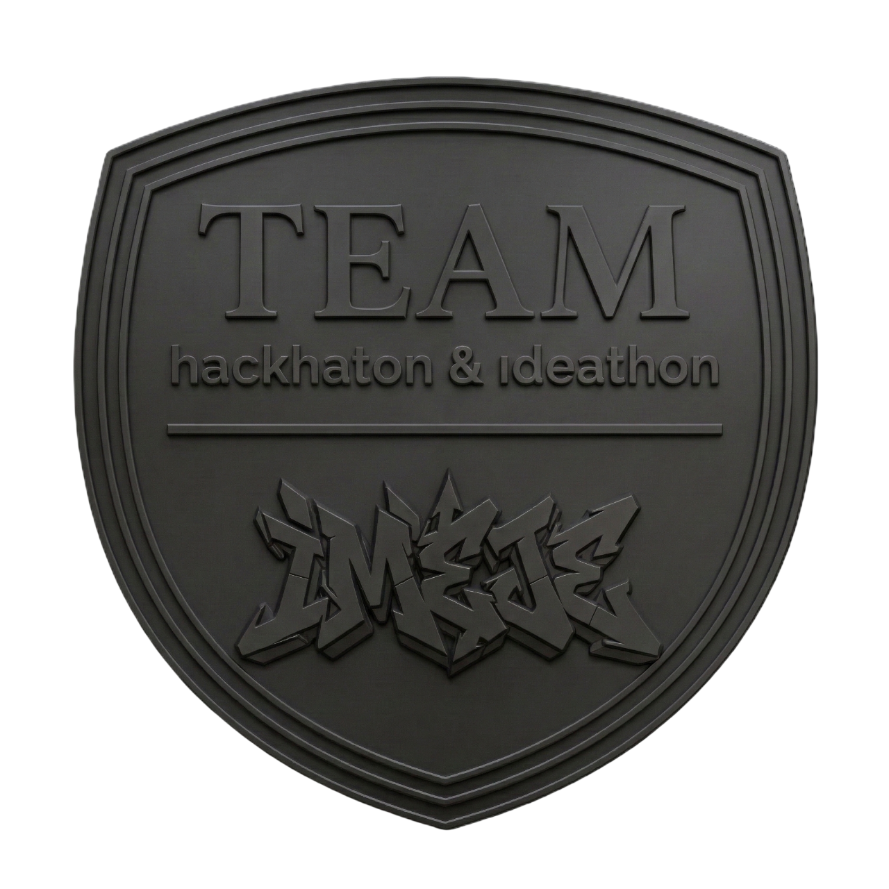

Yapay zeka destekli uydu görüntü işleme ile gerçek zamanlı orman yangını tespiti. Uzaydan dünyayı koruyoruz.
Uydumuz, yörüngeden çektiği multispektral görüntüleri anlık olarak AI modelimize aktararak yangın tespiti gerçekleştirir.
Eğitilmiş modelimiz, orman yangınlarını erken evrede tespit edecek şekilde optimize edilmiş derin öğrenme katmanları içerir.
3D uydu yörüngesi ve yangın tespiti simülasyonu. Gerçek zamanlı veri akışı ile desteklenmektedir.
PyroSat, TUA Hackathon 2025 kapsamında geliştirilen yapay zeka destekli uydu yangın tespit sistemidir.
Türkiye'nin hızla artan orman yangını tehdidine karşı uzay teknolojisi ve derin öğrenmeyi bir araya getirerek erken uyarı altyapısı sunuyoruz.
Multispektral görüntü işleme, CNN tabanlı segmentasyon ve gerçek zamanlı veri akışını birleştiren çözümümüz, mevcut sistemlerden 10 kat daha hızlı tespit yapabilmektedir.
// EKİP ÜYELERİ